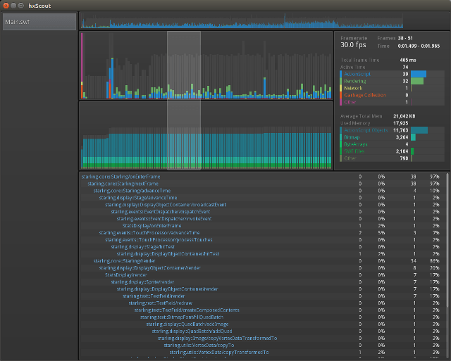

 hxScout currently supports profiling Haxe C++ applications (targetting Windows, Mac OS X, Linux, Android, iOS, and more.) The application under test simply includes the hxtelemetry library, which sends telemetry data to hxScout over a socket, allowing for both local (e.g. same computer) and remote (e.g. android phone) profiling.
Please note that hxScout is in beta - some features are partially implemented, others are planned, there are probably bugs, and APIs will likely change. Please submit any feedback (comments, bugs, feature requests) to me via Twitter or github.
hxScout Version: 0.2 Beta, ~4MB (Haxe version, SWF profiling unstable)
Since hxScout and hxtelemetry are currently in beta, profiling Haxe applications reuires some adjustment to your haxe environment. Applications under test (AUTs) must be built against my github forks of hxcpp (integration branch) and hxtelemetry (master branch). OpenFL-based apps must be built against my fork of openfl (hxt_prototyping branch) which was tested with lime 2.3.3.
If changing your haxe environment is too much hassle, you can download and try a compiled demo application, just to see how profiling works. Availalble for windows, mac, linux.
To generate telemetry data, applications under test must:
Example apps are given in the hxtelemetry/test directory. The HxTelemetry object can be configured as shown in some examples.
Multi-threading note: hxtelemetry is designed to work with multi-threaded apps. Each thread should instantiate an hxtelemetry object and call advance_frame. See my multi-threaded test.
If you're developing a framework (e.g. OpenFL, Snow, heaps, etc) and want telemetry built in for easy access for your users, review my changeset for how I'm doing it for OpenFL and shoot me a tweet. My DisplayingABitmap test is an OpenFL testcase that uses this modified framework, with a special consideration that it will provide an API compatible with Flash's Telemetry API.
Adobe Scout, Adobe® AIR®, and Adobe® Flash® are either registered trademarks or trademarks of Adobe Systems Incorporated in the United States and/or other countries.
hxScout is not affiliated with Adobe Systems Incorporated. hxScout is licensed under the MIT license.
{kind=link}